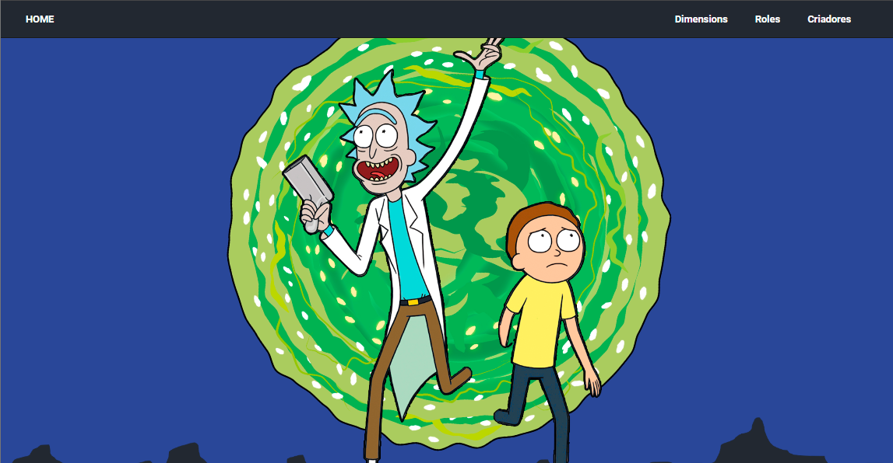

<div class="frontend" id="frontend">
  <div class="front-projects">
    <h1 class="dm-serif">Frontend</h1>
    <div class="card-projects">
      
      <div>
        <div class="project-header">
          <p class="dm-serif text-2xl">Pokedex</p>
          <a class="linked" href="https://steady-pony-156e40.netlify.app/"
            >ver projeto →</a
          >
        </div>
        <p class="description">
          Este é um projeto de Pokedex desenvolvido em React, utilizando a
          PokeAPI como fonte de dados. A Pokedex é uma aplicação web que permite
          aos usuários explorar informações sobre os diferentes pokémons,
          incluindo detalhes como nome, tipo, habilidades e imagens
        </p>
      </div>
    </div>

    <div class="card-projects">
      
      <div>
        <div class="project-header">
          <p class="dm-serif text-2xl">Rick & Morty</p>
          <a class="linked" href="https://ronan-html.vercel.app/"
            >ver projeto →</a
          >
        </div>
        <p class="description">
          Este é um projeto de Rick & Morty desenvolvido em HTML, CSS e
          JavaScript. O projeto consiste em uma página de apresentação com
          informações sobre o universo de Rick & Morty, incluindo personagens,
          episódios, localizações e muito mais.
        </p>
      </div>
    </div>
  </div>
</div>
